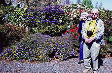
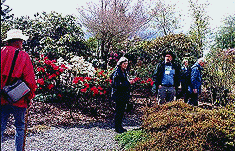
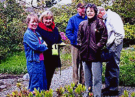
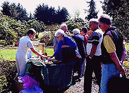
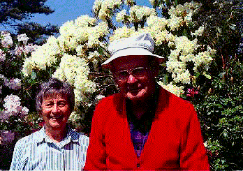

Introduction History Spring Tour Other Seasons Companion Plants Fruit/Veg/Herbs Work Family Links ARS Visiting the Garden Design Elements SPECIMENS TIPS GARDEN FURNITURE
The 1993 and 1999 American Rhododendron Society Annual Convention Garden Tours visit the Anderson Garden 




Introduction History Spring Tour Other Seasons Companion Plants Fruit/Veg/Herbs Work Family Links ARS Visiting the Garden Design Elements SPECIMENS TIPS GARDEN FURNITURE